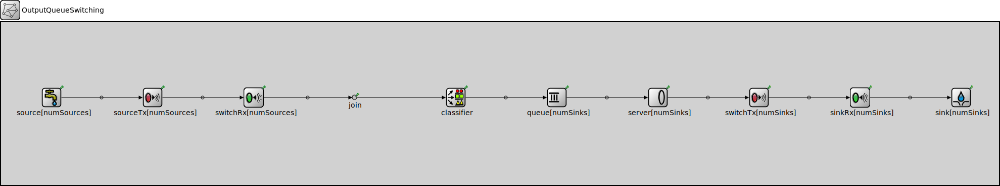

Package: inet.tutorials.queueing
OutputQueueSwitching
network(no description)
Usage diagram
The following diagram shows usage relationships between types. Unresolved types are missing from the diagram.
Parameters
| Name | Type | Default value | Description |
|---|---|---|---|
| numSources | int | ||
| numSinks | int |
Properties
| Name | Value | Description |
|---|---|---|
| isNetwork |
Unassigned submodule parameters
| Name | Type | Default value | Description |
|---|---|---|---|
| source.displayStringTextFormat | string | "created %p pk (%l)" |
determines the text that is written on top of the submodule |
| source.packetNameFormat | string | "%a-%c" |
see directives in module documentation |
| source.packetRepresentation | string | "byteCount" |
determines the chunk of the packet data |
| source.packetProtocol | string | "unknown" | |
| source.packetLength | int | ||
| source.packetData | int | -1 | |
| source.attachCreationTimeTag | bool | true | |
| source.attachIdentityTag | bool | true | |
| source.attachDirectionTag | bool | true | |
| source.clockModule | string | "" |
relative path of a module that implements IClock(1,2); optional |
| source.initialProductionOffset | double | -1s |
initial duration before which packets are not produced. When negative, then produce packet in initialize() |
| source.productionInterval | double |
elapsed time between subsequent packets pushed to the connected packet consumer |
|
| source.scheduleForAbsoluteTime | bool | true |
when a clock is used relative means that setting the clock will not affect the simulation time of the event |
| sourceTx.displayStringTextFormat | string | "processed %p pk (%l)" |
determines the text that is written on top of the submodule |
| sourceTx.clockModule | string | "" |
relative path of a module that implements IClock(1,2); optional |
| sourceTx.datarate | double | ||
| switchRx.displayStringTextFormat | string | "processed %p pk (%l)" |
determines the text that is written on top of the submodule |
| switchRx.datarate | double | ||
| join.displayStringTextFormat | string | "passed %p pk (%l)" |
determines the text that is written on top of the submodule |
| join.forwardServiceRegistration | bool | true | |
| join.forwardProtocolRegistration | bool | true | |
| classifier.displayStringTextFormat | string | "classified %p pk (%l)" |
determines the text that is written on top of the submodule |
| classifier.reverseOrder | bool | false | |
| classifier.defaultGateIndex | int | 0 |
default gate index if no matching labels are found |
| classifier.packetFilters | object |
array of packet filter expressions |
|
| queue.displayStringTextFormat | string | "contains %p pk (%l) pushed %u\npulled %o removed %r dropped %d" |
determines the text that is written on top of the submodule |
| queue.packetCapacity | int | -1 |
maximum number of packets in the queue, no limit by default |
| queue.dataCapacity | int | -1b |
maximum total length of packets in the queue, no limit by default |
| queue.dropperClass | string | "" |
determines which packets are dropped when the queue is overloaded, packets are not dropped by default; the parameter must be the name of a C++ class which implements the IPacketDropperFunction C++ interface and is registered via Register_Class |
| queue.comparatorClass | string | "" |
determines the order of packets in the queue, insertion order by default; the parameter must be the name of a C++ class which implements the IPacketComparatorFunction C++ interface and is registered via Register_Class |
| queue.bufferModule | string | "" |
relative module path to the IPacketBuffer module used by this queue, implicit buffer by default |
| server.displayStringTextFormat | string | "served %p pk (%l)" |
determines the text that is written on top of the submodule |
| server.serveSchedulingPriority | int | -1 |
specifies the FES scheduling priority for the extra event that is pulling the packet, -1 means no extra event |
| switchTx.displayStringTextFormat | string | "processed %p pk (%l)" |
determines the text that is written on top of the submodule |
| switchTx.clockModule | string | "" |
relative path of a module that implements IClock(1,2); optional |
| switchTx.datarate | double | ||
| sinkRx.displayStringTextFormat | string | "processed %p pk (%l)" |
determines the text that is written on top of the submodule |
| sinkRx.datarate | double | ||
| sink.displayStringTextFormat | string | "received %p pk (%l)" |
determines the text that is written on top of the submodule |
| sink.clockModule | string | "" |
relative path of a module that implements IClock(1,2); optional |
| sink.initialConsumptionOffset | double | 0s |
initial duration before which packets are not consumed |
| sink.consumptionInterval | double | 0s |
elapsed time between subsequent packets allowed to be pushed by the connected packet producer, 0 means any number of packets can be pushed at the same simulation time |
| sink.scheduleForAbsoluteTime | bool | true |
when a clock is used relative means that setting the clock will not affect the simulation time of the event |
Source code
network OutputQueueSwitching { parameters: int numSources; int numSinks; submodules: source[numSources]: ActivePacketSource { @display("p=100,150,col,150"); } sourceTx[numSources]: PacketTransmitter { @display("p=300,150,col,150"); } switchRx[numSources]: PacketReceiver { @display("p=500,150,col,150"); } join: PacketMultiplexer { @display("p=700,150"); } classifier: ContentBasedClassifier { @display("p=900,150"); } queue[numSinks]: PacketQueue { @display("p=1100,150,col,150"); } server[numSinks]: InstantServer { @display("p=1300,150,col,150"); } switchTx[numSinks]: PacketTransmitter { @display("p=1500,150,col,150"); } sinkRx[numSinks]: PacketReceiver { @display("p=1700,150,col,150"); } sink[numSinks]: PassivePacketSink { @display("p=1900,150,col,150"); } connections: for i=0..numSources-1 { source[i].out --> sourceTx[i].in; sourceTx[i].out --> DatarateChannel { delay = 1ns; } --> switchRx[i].in; switchRx[i].out --> join.in++; } join.out --> classifier.in; for i=0..numSinks-1 { classifier.out++ --> queue[i].in; queue[i].out --> server[i].in; server[i].out --> switchTx[i].in; switchTx[i].out --> DatarateChannel { delay = 1ns; } --> sinkRx[i].in; sinkRx[i].out --> sink[i].in; } }File: tutorials/queueing/QueueingTutorial.ned
 This documentation is released under the Creative Commons license
This documentation is released under the Creative Commons license